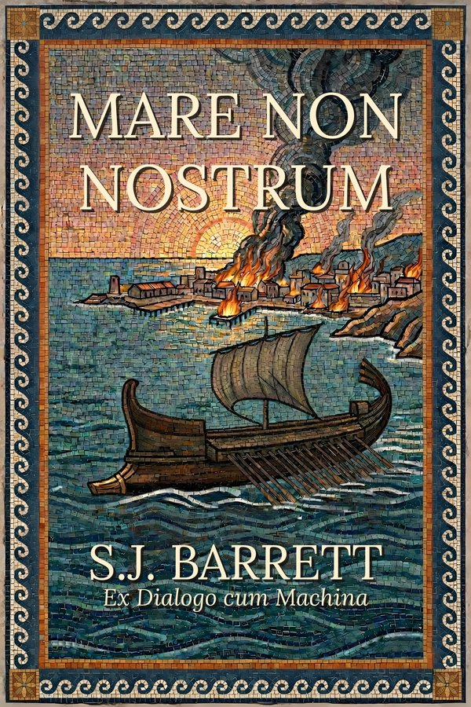

Rome's problems produced violence, which at least had the virtue of clarity. Carthage's problems produced meetings.
A Carthaginian merchant-captain. Not an admiral, not a statesman, not the kind of man whose victories produced events anyone thought worth painting. But in the wreckage of Carthage's first naval defeat, he saw something Rome's enemies always missed — and set a different history in motion.
Mare Non Nostrum is the story of the war he fought and the four and a half centuries of consequences that followed. A land power and a sea power, each transformed by the existence of the other. The institutions that held, the crises that broke them, the wars that didn't happen and the ones that did. A Mediterranean where great men consistently failed and where power belonged to the people who understood systems and patience.
Then, on a remote volcanic island, a woman from a small cult combs the beaches and watches the wind. A mysterious bush in a temple. Forty-three pieces of wood. Her grandfather's log.
Every civilisation mints its own metaphors from its own history. In a world where Carthage survived, the phrases people reach for come from different events than ours — but work the same way. See more →
The quiet term of respect for the work that actually mattered, done by the person nobody will thank.
“Boy, we’re unpaintable, aren’t we.” — Dockworkers finishing a hull repair at midnight, in time for the morning tide.
A confrontation between parties operating from incompatible assumptions. Both sides remember it as the moment the other became unreasonable.
“I said ‘we should talk.’ She packed a bag.” “Saltus Pass.” “I meant about the goat.”
A request that will never be meaningfully answered, no matter how carefully crafted.
“I told the landlord about the roof six times.” “And?” “Petition to Carthage.” “Still leaking?” “In new places.”
Mare Non Nostrum was written through sustained dialogue with a language model — months of argument about institutions, incentives, geography, and what happens when two incompatible civilisations share a sea and neither can destroy the other. The model generated the prose. The world that produced those idioms — the events behind them, the logic that connects them, the civilisation dense enough to mint its own metaphors — that is what the argument built.